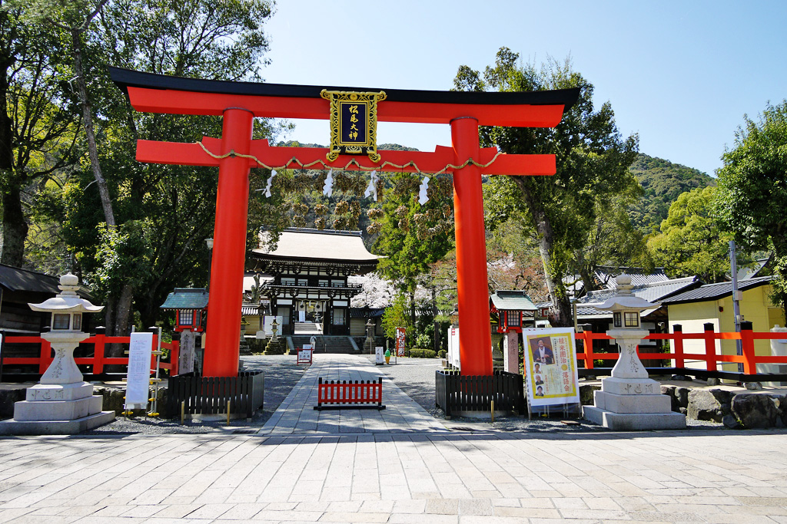

京都の歴史を感じながら
古き良きレトロな雰囲気を醸し出す銭湯
歴史を感じる雰囲気は日頃の疲れを洗い落します。
WHAT'S NEWS -新着情報-
当浴場の近くには、名所がいくつか存在する。
松尾大社に、嵐山、東映太秦映画村・・・
参拝前に身を清めたい時や、観光での汗や疲れを落としたい時
そんなひと時に当浴場での入浴はいかがでしょうか。
AREA INFORMATION
-周辺情報-
-
- 嵐山
- 観光名所の一つである嵐山は、紅葉がすごくきれいです。嵐山から車で約10分で梅の宮湯へお越しいただけます。
-

- 松尾大社
- 飛鳥時代に建てられ、京都最古の神社の一つとして知られています。酒造神が奉られていることで有名です。徒歩で約8分くらいで梅の宮湯へお越しいただけます。
-
- 東映太秦映画村
- 日本映画や江戸時代を再現したテーマパーク。村内に一歩足を踏み入れると、まるで江戸時代にタイムスリップしたかのような町並みが広がっています。車で約8分です。
-
- 梅の宮大社
- 750年ごろに建てられ、酒造安全や子孫繁栄にご利益があると言われています。日本酒造の原点ともされているようです。毎年8月の最終日曜日に嵯峨天皇祭が行われています。今年を含めた3年は中止されています。また、最近では猫がいる神社としても有名です。梅宮大社から徒歩で約7分ほどで梅の宮湯へお越しいただけます。
-
- 有栖川
- 京都市右京区を流れる桂川中流へとつながる支流で、整備された散歩コースもきれいですし、春にはサクラも満開です。